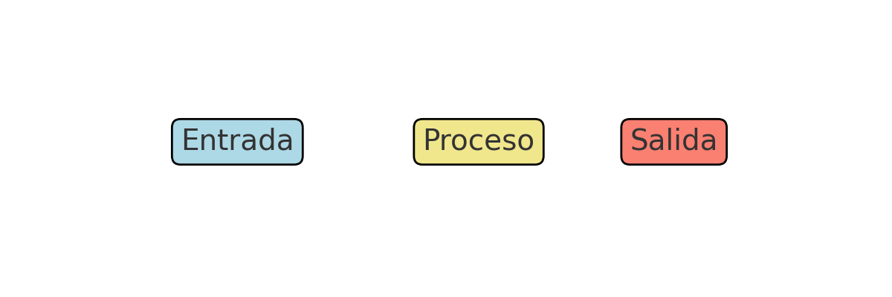
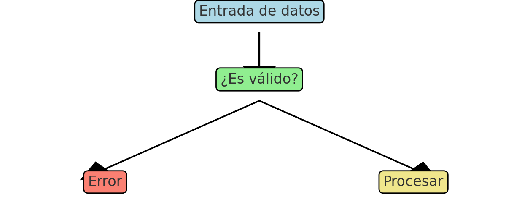
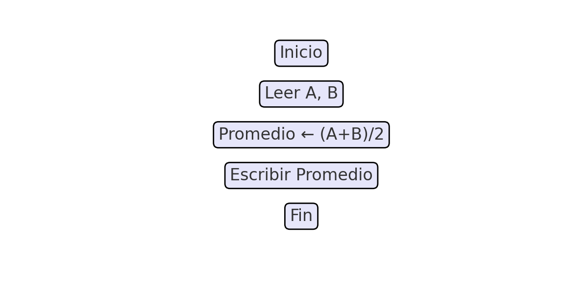

Introducción
En este tema aprenderás a identificar y analizar problemas para proponer soluciones lógicas. Conocerás cómo reconocer entradas, restricciones y salidas, descomponer un problema con el esquema E-P-S, trabajar con tipos de datos y operadores, y finalmente elaborar un primer borrador de pseudocódigo.
Objetivos
- Identificar entradas, restricciones y salidas de un problema.
- Aplicar el esquema E-P-S para descomponer un problema.
- Reconocer tipos de datos, variables y constantes.
- Usar operadores y expresiones para plantear soluciones básicas.
- Validar rangos y formatos de datos.
- Elaborar un borrador de pseudocódigo.
Contenido
Todo problema debe analizarse identificando:
- Entradas: datos iniciales necesarios.
- Restricciones: condiciones o limitaciones.
- Salidas: resultados esperados.
El esquema E-P-S ayuda a organizar problemas complejos en pasos simples.
- Entero: números sin decimales.
- Real: números con decimales.
- Lógico: verdadero o falso.
- Cadena: texto.
Existen tres grandes grupos de operadores:
- Aritméticos: +, -, *, /, %
- Relacionales: ==, !=, <, <=, >, >=
- Lógicos: &&, ||, !
Un buen programa debe manejar entradas inválidas con mensajes claros y seguros.
El pseudocódigo es un puente entre el análisis y la programación real.
Actividades
- Identifica entradas, restricciones y salidas de un problema cotidiano.
- Clasifica variables en entero, real, lógico o cadena.
- Escribe 3 expresiones usando operadores aritméticos y lógicos.
- Redacta un borrador de pseudocódigo simple (ej. calcular promedio).
Evaluación
Responde el siguiente quiz:
Recursos y Bibliografía
- Joyanes Aguilar, L. (2020). Fundamentos de programación. McGraw-Hill.
- PSeInt
- FreeCodeCamp